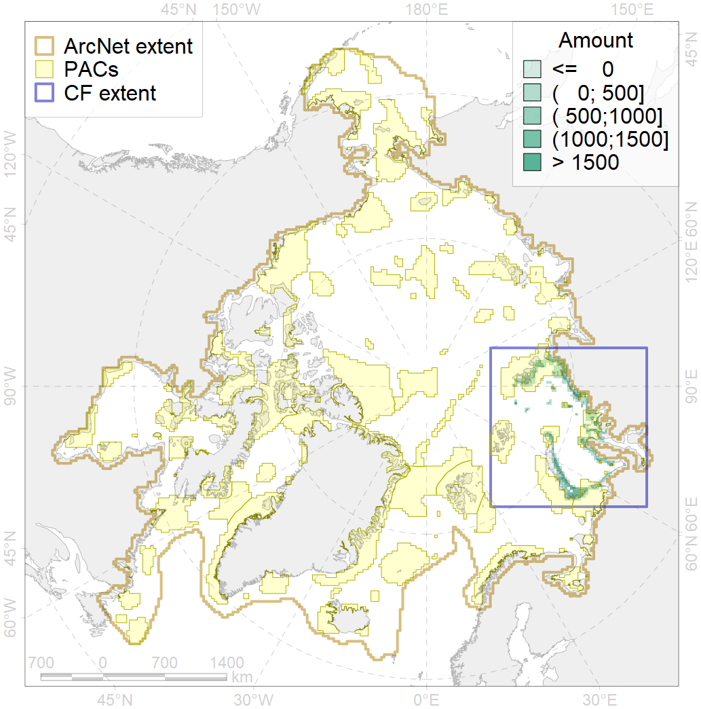
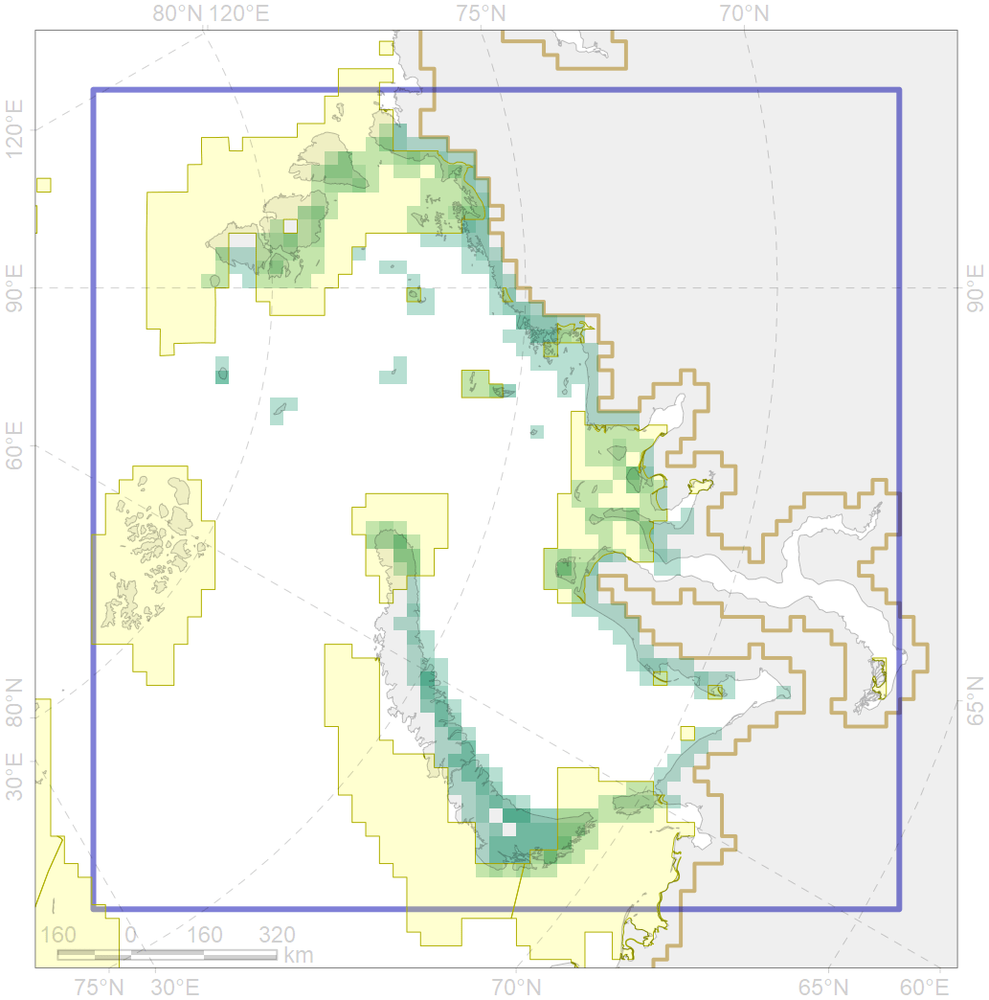

9028

| CF ID | 9028 |
| CF Name | polar bear denning areas of KS (Kara Sea) subpopulation |
| Time Period | prior to 2015 |
| Source(s) | Report for project “Creating Atlas of Polar bear in Russian Arctic” |
| Seasonality | October - April |
| Depth Horizon | 0 |
| Methodology | Field data, expert opinion. |
| Author Name | Evgeniya Melikhova, Stanislav Belikov |
| Notes | |
| Conservation Target Set in the Scenario | 0.528 |
| Conservation Target Achieved in the Scenario | 0.531 (Scenario: 100.5%) |
| PAC ID | Proportion in the PAC | Contribution to ArcNet Target Achievement | PAC’s Contribution to the Achieved Target |
|---|---|---|---|
| 14 | 21.9% | 35.9% | 35.7% |
| 15 | 3.2% | 5.4% | 5.4% |
| 16 | 14.0% | 25.9% | 25.8% |
| 18 | 0.3% | 0.4% | 0.4% |
| 19 | 5.2% | 9.4% | 9.3% |
| 20 | 8.8% | 15.5% | 15.4% |
| 21 | 0.6% | 1.1% | 1.1% |
| inner | 54.1% | 93.6% | 93.1% |
| outer | 45.9% | 6.9% | 6.9% |